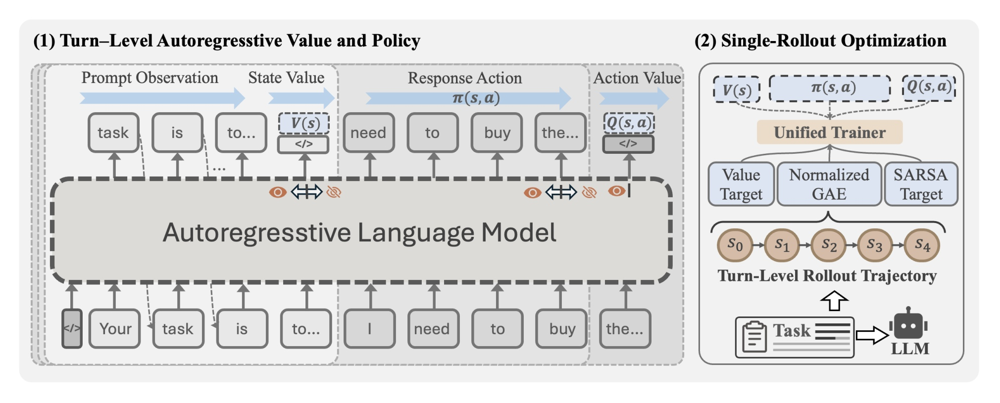
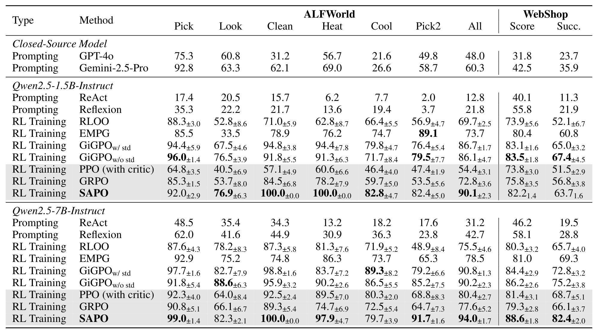
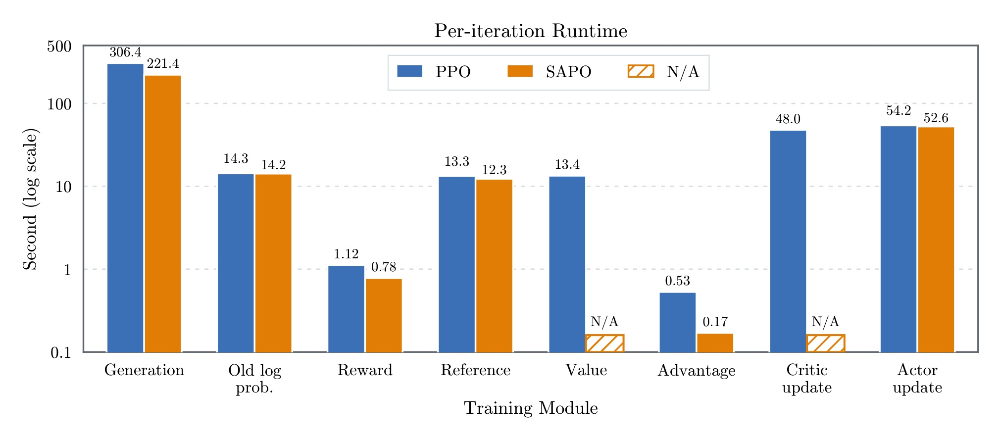

SAPO：面向智能体强化学习的单轨迹自回归策略优化
这篇论文由厦门大学梁大洋、刘云龙与南洋理工大学冯朗、安波合作完成，一作主机构为厦门大学。论文提出 Single-Rollout Autoregressive Policy Optimization（SAPO），目标是在一个因果语言模型里同时承载策略、状态值与动作值，从而保留 actor-critic 的时序信用分配，又不再维护独立的策略规模 critic。论文于 2026 年 8 月 20 日公开，入口为 arXiv:2608.19842。本轮未核验到独立代码或项目页，论文首页标注为审稿中。
现有无 critic 的组相对优化虽然省去策略规模价值模型，却依赖同一任务的多条 rollout；在稀疏、长时程失败中，同组回报趋同时优势会坍缩，而且轨迹级信号难以定位究竟是哪一回合造成成败。若重新引入独立 critic，又会恢复显存、前反向计算与训练状态的高成本。
1. 背景和问题
1.1 长时程智能体为什么需要价值估计
大语言模型做数学或代码后训练时，一次回答通常可被视作单条序列；智能体任务却把一次决策扩展成多轮状态、思考、动作与环境反馈。以 ALFWorld 为例，模型要根据文本观察决定拿取、移动、清洁或加热物品，错误动作可能直到数十回合后才表现为任务失败。WebShop 也要求模型在商品搜索、属性核对与选择之间持续交互。若环境只在轨迹终点给出成功或失败奖励，那么训练器不仅要知道“这条轨迹好不好”，还要回答“前面哪一回合提高了成功概率，哪一段重复或误操作把后续带进死路”。这正是时序信用分配问题。
传统 PPO 用状态价值函数估计从当前状态继续行动的期望回报，再以 GAE 把终点反馈沿时间反向传播。这样，同一条失败轨迹中的不同回合可以得到不同优势，价值网络还可以把在一个任务中学到的低价值状态模式泛化到别的提示或后续策略迭代。代价是 LLM 场景里的 critic 往往与策略模型同量级：除了 actor、reference 与 rollout 模型，还要保存价值模型参数、优化器状态，并执行单独的价值前向和反向。模型规模增大、上下文变长时，这一份重复训练状态会直接挤压可用 batch、序列长度与设备容量。
GRPO 一类组相对方法选择移除 critic：对同一任务采样多条完整轨迹，用组内回报的均值和方差构造相对优势。它节省价值网络，却引入三个与长时程智能体尤其冲突的约束。第一，若同组 rollout 都失败并得到相同的稀疏奖励，标准化后的优势接近零，策略几乎收不到更新，这就是论文强调的 advantage collapse。第二，同一个轨迹级优势通常被广播到整条生成序列，成功轨迹中的偶然绕路与关键正确动作会被同样奖励，失败轨迹中的早期有效探索也会被一起惩罚。第三，为了让组均值更可靠而增大采样数，会成倍增加环境交互和解码成本；多条变长轨迹还要等待最慢样本，形成同步障碍。
1.2 既有折中为什么仍未闭环
相关工作大致沿两条路线补救。ReMax、RLOO 用贪心或 leave-one-out 基线减少 critic 依赖，但仍要额外生成轨迹，且没有跨状态价值泛化；VinePPO 通过中间状态的 Monte Carlo continuation 估值，同样以更多解码换取信用信号。另一条路线重新重视价值模型：Open-Reasoner-Zero、VC-PPO、VAPO 等工作表明 critic 预训练和更好的 GAE 对长推理链很重要，却保留了独立价值网络。Hydra-PPO 在冻结骨干上放置角色适配器，J-Hydra 进一步共享可训练适配器，但策略与价值目标可能互相干扰；POISE 从 actor 隐状态预测回报，仍依赖跨 rollout 构造；SAO 做单 rollout 异步收集，却需要单独预训练且更频繁更新的 critic。
因此，SAPO 要解决的并不是简单的“少一个 head”，而是更严格的表示问题：能否利用语言模型天然的因果顺序，让状态值只看动作之前的信息，让动作值看到完整动作但看不到动作后的奖励，同时让策略继续按正常 token 分布生成？ 如果这三个语义边界能在同一自回归流里成立，那么参数共享就不必牺牲 actor-critic 的信息约束；如果做不到，所谓共享很可能只是把相互冲突的目标塞进同一隐状态。
论文据此提出两个可检验主张。算法层面，一条 rollout 应能借助学习到的旧策略价值，构造逐回合 GAE、状态值目标与 on-policy SARSA 动作值目标，而不再用同提示多样本做组内比较。系统层面，策略、V 与 Q 应在同一次 actor 评估和更新中产生，移除独立 critic 的前反向与训练状态。后面的实验确实提供了两环境、两模型规模的任务结果和一组模块级时延拆分，但当前 11 页版本没有给出组件消融、峰值显存或连续训练曲线；读者需要把“提出了四个研究问题”和“已经展示足够证据回答四个问题”区分开来。
2. 方法
2.1 自回归 Actor-Critic 表示
SAPO 先把一次环境回合写成两个连续上下文。$c_t^s$ 是动作生成前的状态上下文，包含任务与截至第 $t$ 回合的观察；$a_t=(a_{t,1},\ldots,a_{t,M_t})$ 是模型生成的完整文本动作；$c_t^{sa}=[c_t^s;a_t]$ 则把状态和动作拼接起来。因果语言模型在输出第一个动作 token 前的边界只能看见 $c_t^s$，适合读出 $V(s_t)$；在最后一个有效动作 token 后的边界已经看见完整 $a_t$，但尚未接收环境下一状态与奖励，适合读出 $Q(s_t,a_t)$。SAPO 的关键并非抽象地“共享骨干”，而是把 V、策略生成与 Q 放在因果可见信息恰好不同的三个位置。 为了不用新增价值 head，论文从现有词表中保留两个条目 $w^+$、$w^-$，把它们的 next-token logit 差映射成有界标量。式（1）为：
符号解释：$z_{\theta,w}(c)$ 是参数为 $\theta$ 的因果模型在上下文 $c$ 后对词表条目 $w$ 给出的 logit；$w^+$ 与 $w^-$ 是专用于价值读出的两个保留条目；$\tau_v>0$ 是控制 logit 差尺度的价值温度；$\operatorname{clip}$ 把结果限制在 $[-1,1]$。使用差值意味着两个 logit 同时平移不会改变读出，但硬裁剪也意味着超出范围后局部梯度可能饱和，$\tau_v$ 与回报尺度需要匹配。若折扣回报位于 $[-R_{\max},R_{\max}]$，状态值与动作值按式（2）恢复到回报量纲：
符号解释：$R_{\max}$ 是任务折扣回报绝对值上界；$V_\theta(s_t)$ 在动作前边界读取，表示从状态 $s_t$ 继续行动的期望回报；$Q_\theta(s_t,a_t)$ 在完整动作后边界读取，评价本回合实际选择的 $a_t$。二者使用同一函数 $p_\theta$ 和同一参数，却因为上下文分别为 $c_t^s$ 与 $c_t^{sa}$ 而具有不同条件信息。保留条目只作读出，不会被附加到上下文，也不会暴露给环境。为了防止 $w^+$、$w^-$ 变成模型可生成的伪动作，SAPO 定义 $\mathcal W_{act}=\mathcal W\setminus\{w^+,w^-\}$，并在 rollout、对数概率和熵计算中都只对动作词表归一化：
符号解释：$\mathcal W$ 是完整词表，$\mathcal W_{act}$ 是移除两个价值基后的生成词表，$a$ 是允许输出的动作 token。这样，策略损失不会经动作 softmax 直接奖励或抑制价值基，但 V/Q 损失仍会通过两个原始 logit 更新语言模型头和 Transformer。训练实现必须在采样、旧策略 log-prob、当前策略 log-prob 与 entropy 四处保持同一屏蔽规则，否则重要性比会失配。

Figure 1 左侧从下到上画出输入 token、共享自回归语言模型与输出位置。Prompt Observation 区结束后，模型在生成响应之前读取 $V(s)$；随后 Response Action 区由策略 $\pi(s,a)$ 逐 token 生成；完整动作结束时再读取 $Q(s,a)$。眼睛与遮蔽图标强调两个价值边界能看见的前缀不同：状态值不能偷看未来动作，动作值能看见已选动作，却仍看不到环境随后返回的奖励。这是共享参数仍保留角色语义的依据。右侧把一条由 $s_0$ 到 $s_4$ 的回合轨迹送入三个目标：状态 value target、Normalized GAE 与 SARSA target，再由 Unified Trainer 同时监督 $V(s)$、$\pi(s,a)$ 和 $Q(s,a)$。图中没有第二套 critic 骨干，也没有同任务的多条并行轨迹；但“单 rollout”不等于无需额外 actor 评估，旧策略仍要在采样序列上计算 token 概率和两个价值读出，当前 actor 也要做一次联合前向与反向。真正省掉的是独立 critic 的模型、优化器状态及其计算路径。
2.2 单轨迹时序优势估计
一条轨迹记为 $\tau=\{(s_t,a_t,r_t,d_t)\}_{t=1}^T$，其中 $d_t$ 表示第 $t$ 回合后是否终止。所有训练目标都由环境已观察奖励与冻结 rollout 策略 $\pi_{\theta_{old}}$ 的价值预测构造，当前参数的 V/Q 不能参与生成自己的目标。论文先定义 TD 残差与轨迹内递归 GAE：
符号解释：$r_t$ 是本回合环境奖励，$\gamma$ 是折扣因子，$d_t\in\{0,1\}$ 控制终止后不再 bootstrap，$V_t^{old}=V_{\theta_{old}}(s_t)$ 是旧策略状态值；$\lambda$ 调节偏差与方差，$A_t^{GAE}$ 把后续 TD 残差反向累积到当前回合。论文把到达环境 horizon 的截断轨迹也视为有限时域终止，最终 bootstrap 置零。即使只有终点奖励，不同回合也会因旧价值与后续路径不同得到不同信号，这一点正是轨迹级组优势无法提供的。同一次反向遍历还构造两个价值目标：
符号解释：$y_t^V$ 是状态值的 $\lambda$-return 目标；$y_t^Q$ 是 on-policy SARSA 目标，$Q_{t+1}^{old}$ 评价同一旧策略轨迹在下一状态实际选择的下一动作。前者把长程结果传到动作前状态边界，后者把动作后边界锚定到当前动作的即时后果与后续实际选择。SAPO 没有直接用同时学习的 $Q-V$ 差更新策略，而仍用 GAE 作 policy advantage；作者的理由是早期 Q 校准不足时，直接相减会把动作值误差注入策略梯度。Q 目标在这里是辅助训练动作条件价值表示，而非策略优势的直接来源。在把回合优势广播到 token 前，论文先做 batch 级归一化。若环境给出 invalid-action 指示 $m_t^{inv}$，先令 $\widetilde A_t=A_t^{GAE}-c_{inv}m_t^{inv}$；否则 $c_{inv}=0$。式（7）为：
符号解释：$\mu_B$、$\sigma_B$ 是当前训练 batch 中所有有效回合的优势均值和标准差，$\epsilon_{adv}$ 防止分母为零，$c_{inv}$ 是无效动作惩罚系数。归一化后，同一回合的 $\widehat A_t$ 才广播到动作 $a_t$ 的所有有效 token。先按回合统计、再按 token 广播，可避免长回答因 token 更多而主导均值方差。它与 GRPO 的根本区别是比较独立任务与独立回合的学习信号，而不是要求同一提示同步生成多条轨迹。
2.3 策略与价值联合优化
环境按回合执行动作，但语言模型在回合内部作出多次 token 决策。令 $\ell^{old}_{t,j}$、$\ell_{t,j}(\theta)$ 分别为受限动作词表下第 $j$ 个 token 的旧、新对数概率，则式（8）的重要性比和式（9）的策略损失为：
符号解释：$j$ 遍历回合 $t$ 的有效动作 token，$\rho_{t,j}$ 衡量新旧策略对该 token 概率的变化，$\epsilon$ 是 PPO trust region 的裁剪宽度，$\widehat A_t$ 是全回合共享的归一化优势。该目标仍是 token 级 PPO clipped surrogate，只是优势不再来自独立 critic 或同提示组相对回报。共享优势没有细到单 token 信用，但至少先在环境决策的回合尺度区分贡献。
V/Q 回归在归一化价值空间进行。对 $X\in\{V,Q\}$，令 $p_t^V=V_\theta(s_t)/R_{\max}$、$p_t^Q=Q_\theta(s_t,a_t)/R_{\max}$，目标为 $\bar y_t^X=y_t^X/R_{\max}$。论文先限制新值相对旧值的变化，再选择未裁剪与裁剪误差中的较大者：
符号解释：$p_t^{X,old}$ 是 rollout 时冻结的旧值读出，$\epsilon_X$ 是 V 或 Q 各自的更新裁剪宽度，$L_V$ 与 $L_Q$ 分别在有效回合上平均。取两种平方误差的最大值会阻止优化器利用裁剪产生过度价值跳变。与 token 策略损失不同，价值损失按回合平均，使每次环境决策权重相同，不会因响应较长而自然放大。
最终式（12）把五类信号合并：
符号解释：$c_V$、$c_Q$ 控制状态值和动作值监督相对策略损失的权重，$\beta L_{KL}$ 限制策略偏离 reference，$c_HH(\pi_\theta)$ 以负号鼓励策略熵与探索。策略、V、Q 使用不同位置 mask，却更新同一个 Transformer 和语言模型头。每轮先冻结 $\theta_{old}$ 并对每个任务采一条轨迹，再用旧 actor 得到 log-prob、V、Q，沿轨迹反向算式（4）至式（7），随后一次当前 actor 前向产生策略与双价值预测，最后最小化总损失。共享参数使策略语言建模与价值回归之间仍可能发生梯度干扰；论文用独立损失系数和裁剪控制这种风险，但当前版本没有给出 $c_V/c_Q$ 消融或梯度冲突测量。
3. 实验结果
3.1 任务、对照与主结果
实验使用 ALFWorld 和 WebShop。ALFWorld 是具身家居文本环境，包含 3,827 个任务，分 Pick & Place、Examine in Light、Clean & Place、Heat & Place、Cool & Place、Pick Two & Place 六类，最大交互回合设为 50；WebShop 含约 110 万商品与 12,000 条用户指令，最大 15 回合。骨干为 Qwen2.5-1.5B-Instruct 和 Qwen2.5-7B-Instruct，学习率 $1\times10^{-6}$，KL 惩罚系数 0.01，总训练 150 steps。论文称实验运行于 4 张 NVIDIA H200 与 8 张 A40，但没有逐项说明哪类实验使用哪组设备。
对照包含闭源 GPT-4o、Gemini-2.5-Pro，免训练 ReAct、Reflexion，以及 PPO、RLOO、GRPO、EMPG、GiGPO 等 RL 方法。RL 训练方法报告三个随机种子的均值与标准差，不过 Table 1 注明多数对照条目来自 Feng 等人的既有工作，因此它兼有复用结果而非全部同一代码路径重新运行。闭源 prompting 结果也不应被理解为与 1.5B/7B 强化学习在算力、提示或交互预算上完全等价；更有解释力的核心比较是相同骨干下的 SAPO 对 PPO 和 GRPO。

Table 1 的列先给 ALFWorld 六个子任务及总体 All，再给 WebShop 的 Score 与 Success。Qwen2.5-1.5B 下，SAPO 的 ALFWorld All 为 90.1，PPO 为 54.4、GRPO 为 72.8，对应提升 35.7 和 17.3 个百分点；Clean、Heat 达到 100.0，但 Pick 的 92.0 低于 GiGPO 无标准差版本的 96.0，说明它并非每个子任务都绝对最佳。WebShop 上 SAPO Score 为 82.2、Success 为 63.7；相对 PPO 的 73.8/51.5，提高 8.4/12.2 点；相对 GRPO 的 75.8/56.8，提高 6.4/6.9 点。GiGPO 无标准差版本在这一规模的 WebShop 为 83.5/67.4，仍高于 SAPO，因此“总体更强”不能替换成“对表内所有方法全面领先”。
到 Qwen2.5-7B，SAPO 的优势更整齐：ALFWorld All 为 94.0，对 PPO 80.4 提高 13.6 点，对 GRPO 77.6 提高 16.4 点；WebShop Score/Success 为 88.6/82.4，对 PPO 提高 7.2/13.7 点，对 GRPO 提高 9.3/16.3 点，也高于表中的 GiGPO 两种版本。不过子任务仍有例外，例如 Look 的 82.3 低于 GiGPO 无标准差版本 88.6，Cool 的 79.7 低于 GiGPO 有标准差版本 89.3。主表真正支持的是：在两种骨干规模与两个环境的三个聚合指标上，SAPO 稳定超过论文 PPO 与 GRPO 配置；它不支持所有类别、所有基线逐格占优。
摘要中的“平均 +15.1 与 +12.1 个百分点”可以由表中六个聚合差值复核：两个模型规模各取 ALFWorld All、WebShop Score、WebShop Success，相对 PPO 的六个差值平均约 15.1，相对 GRPO 的六个差值平均约 12.1。这两个数字只属于 ALFWorld/WebShop、Qwen2.5-1.5B/7B 与论文对照配置的汇总，不是通用智能体提升，更不是线上推荐或搜索系统收益。 三随机种子的标准差显示部分子任务波动明显，如若要判断小差距是否稳健，还需要逐种子数据或显著性分析，当前版本没有提供。
3.2 单迭代时延与结构性节省
论文在 ALFWorld、Qwen2.5-1.5B 上拆分一次训练迭代耗时。PPO 总计 451.2 秒，SAPO 为 301.4 秒，绝对减少 149.8 秒，相对下降 33.2%。这不是跨硬件基准，而是论文 PPO 实现与 SAPO 在特定任务、模型及设备配置下的测量。图的纵轴采用对数刻度，柱高不能按线性比例肉眼比较，应该读取柱顶数字。

Figure 2 把耗时分成 Generation、Old log probability、Reward、Reference、Value、Advantage、Critic update、Actor update 八项。最大绝对差来自生成：PPO 为 306.4 秒，SAPO 为 221.4 秒，节省 85.0 秒；但论文没有做控制变量实验解释这 85 秒究竟有多少来自单 rollout 数、调度、序列长度差异或实现细节，因此不能把它全归因于共享价值读出。更清晰的结构性节省是独立价值路径消失：PPO 的 Value 为 13.4 秒、Critic update 为 48.0 秒，两项共 61.4 秒；SAPO 对应位置标为 N/A，因为 V/Q 随 actor 计算和更新。
其余 actor 侧开销相近：旧策略 log-prob 为 14.3 对 14.2 秒，reference 为 13.3 对 12.3 秒，actor update 为 54.2 对 52.6 秒；reward 为 1.12 对 0.78 秒，advantage 为 0.53 对 0.17 秒。它说明在这套实现里加入两个因果价值读出没有产生可见的大额 actor 侧增量，但不能推导为“价值估计免费”：SAPO 仍计算保留 token 的 logit、V/Q 目标与回归损失，且共享骨干承担了这些梯度。图中没有峰值显存、吞吐随模型规模变化或长序列扩展曲线，所以“移除独立 critic 的内存结构”是可由架构确认的事实，具体节省多少 GB 尚未量化。
3.3 证据完整性与未回答问题
论文在实验开头列出四个问题：核心基线性能、组件敏感性、资源开销、连续训练稳定性。当前主表回答了第一项，时延图部分回答第三项；但 11 页 PDF 没有消融表，没有比较移除 Q 目标、取消 batch normalization、改变 $\lambda$、共享或不共享价值基的影响，也没有训练奖励曲线或长时程稳定性曲线。正文提到 technical supplement 提供更多实现细节，但该补充并未包含在当前 PDF 中。因而，摘要“训练稳定”的判断只能视为作者基于运行观察的结论，读者无法从已展示图表独立审计连续 150 steps 是否发生震荡、坍缩或种子分化。
此外，实验覆盖两个模拟环境、两种 Qwen2.5 规模，奖励均以任务结果为主，尚未触及开放式工具调用、代码执行、网页动态变化或含噪人类偏好。最大 50/15 回合足以体现一定长时程性，却不能代表更长上下文和异步真实服务。SAPO 把价值限制在两个词表 logit 的差值上，这种低维读出是否足以表征更复杂、多目标回报，也没有专门分析。代码未核验到独立开源仓库，使复现者暂时无法确认价值基 token 的选择、$R_{\max}$、$\tau_v$、$c_V/c_Q$、裁剪宽度及混合设备调度等关键实现细节。
综合来看，性能表和时延图共同证明 SAPO 是值得继续验证的架构候选：它在受控配置中没有因移除独立 critic 而退化，反而超过 PPO/GRPO，并确实消除了两段独立价值计算。证据尚不足之处主要在“为什么有效”和“能否外推”：没有组件消融便无法区分因果边界表示、SARSA 辅助目标、GAE、batch normalization 各自贡献；没有更广任务与规模曲线，也无法判断两个保留 token 在更大模型和更复杂奖励下是否仍稳定。
4. 总结
4.1 我的判断
SAPO 最有价值的地方，是把 actor-critic 的信息约束翻译成自回归模型的因果位置约束：动作前读 V，动作后且奖励前读 Q，中间按正常策略生成。这个构造比简单加一个 value head 更彻底，因为它让策略与双价值共用语言模型头和一次训练更新；又比纯组相对方法保留了跨状态价值泛化与逐回合 GAE。主结果显示该折中在 ALFWorld/WebShop、Qwen2.5-1.5B/7B 上可行，模块时延也验证移除独立 critic 路径确实有系统收益。
对大模型 Agent 工程而言，值得迁移的是“把监督读出放在正确因果边界”的设计原则：工具调用前的状态价值可用于是否继续思考、是否调用工具或提前停止，动作后价值可评价某次完整调用；对推荐系统而言，可类比多轮会话中曝光前状态与曝光后动作的价值，但必须重新处理日志策略、离线偏差和多目标奖励，不能直接套用论文数值。SAPO 目前更像一条清晰、轻量的训练骨架，而不是已经覆盖所有智能体场景的成熟方案。
4.2 局限与风险
- 证据缺少关键消融。 当前 PDF 没有分别验证两 token 价值基、Q 辅助目标、batch-normalized GAE 与联合损失权重的贡献，因此无法判断增益主要来自哪一环，也无法量化策略—价值梯度干扰。
- 任务与模型外推有限。 实验只有两个模拟交互环境和 Qwen2.5 的 1.5B/7B 两档，未覆盖更大模型、开放网页、代码执行、含噪奖励或真实用户交互；+15.1/+12.1 点不能外推。
- 效率口径较窄。 33.2% 仅是 ALFWorld、Qwen2.5-1.5B、论文 PPO 配置的单迭代时延；生成阶段为何减少 85 秒未被隔离，且没有峰值显存、吞吐或跨硬件曲线。
- 价值表示存在容量与饱和风险。 V/Q 都压缩为两个词表 logit 的单一差值并裁剪到 $[-1,1]$，当奖励多目标、尺度漂移或超出 $R_{\max}$ 时，可能出现表达不足或裁剪饱和。
- 共享参数可能互相干扰。 策略生成、状态值与动作值同时更新同一骨干和语言模型头，$c_V/c_Q$ 选择不当可能损伤语言能力或价值校准；论文没有展示梯度相似度和训练稳定曲线。
- 复现条件尚不完整。 本轮未核验到独立代码，正文也未给所有超参数与硬件分配细节；表中多数基线来自既有工作，严格同栈公平比较仍需复跑。
4.3 后续跟进
- 先做最小消融矩阵。 在同一 Qwen2.5-1.5B 环境中依次移除 Q loss、改用 $Q-V$ 优势、关闭 batch normalization、改变价值基与 $\tau_v$，同时记录成功率、V/Q 校准误差和策略 KL，才能定位真正贡献。
- 补齐系统测量。 除单迭代秒数外，报告 actor/critic 参数、优化器状态、峰值显存、每秒环境步数与不同轨迹长度下的吞吐，并把 rollout 数和调度策略控制一致，以拆开算法节省和工程实现差异。
- 审计连续训练稳定性。 公布三种子逐 step 成功率、value loss、explained variance、价值饱和比例与梯度冲突指标，重点观察长失败轨迹和同批奖励趋同时 SAPO 是否仍有有效梯度。
- 扩展到更真实的 Agent 与推荐场景。 在动态网页、工具错误、代码执行和多轮个性化任务中测试，加入离线策略偏差、非平稳奖励与安全约束；只有跨环境复现后，才能判断单因果流 actor-critic 是否具备普适性。
总体上，这篇论文给出了一个很干净的问题重构：不再在“要 critic 的信用分配”与“不要 critic 的低开销”之间二选一，而是利用自回归边界让同一模型承担两种价值语义。现有结果足以证明方向可行，却不足以证明其稳定性、内存收益与跨任务泛化已经闭环；最值得等待的是代码、技术补充、消融和更大规模实验。